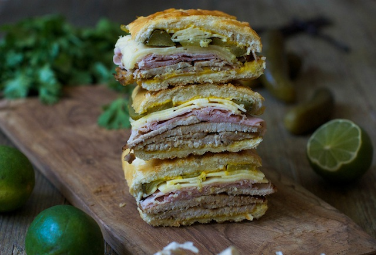

Cubano

Description
Cubano, as seen on the movie Chef! It's got ham, it's got pork, and it's best served with a cold beer. In other words, it is 100% not Kosher nor Halal! But it is 100% tastey. Wow, I should write for the food channel.
Ingredients
- Soft sandwich bread
- Cooked ham
- Roasted pork slices
- Cheese
- Mustard
- Pickles
Steps
- Mustard up the inside of both slices of bread
- Place ham and pork into bun
- Place pickles and cheese slices on both sides of sandwich
- Close sandwich and grill the outsides
Back to home